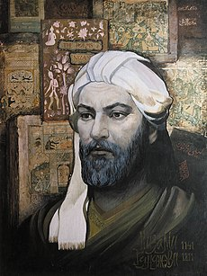

TEACHERS
Nizami Gəncəvi
"Nizami Gəncəv"inin tam adı: Əbu Məhəmməd İlyas ibn Yusif; təxm. 1141, Gəncə, Eldənizlər dövləti (hazırkı Azərbaycan Respublikasının ərazisi) – təxm. 1209, Gəncə) — Azərbaycan fars dilli poeziyasının klassiki, orta əsrlər şərqinin ən böyük şairlərindən biri, fars dilli epik ədəbiyyatın ən böyük romantik şairi, farsdilli epik poeziyaya danışıq dili və realistik stili gətirmiş sənətkardır. Şifahi xalq ədəbiyyatı və yazılı tarixi salnamələrin ənənəvi mövzularından istifadə edən Nizami, islamdan əvvəlki və islam dövrü İranını birləşdirmişdir.[1] Nizaminin qəhrəmanlıq-romantik poeziyası sonrakı əsrlər boyunca, fars dilinin istifadə olunduğu bütün ərazilərdə özünü ona oxşatmağa çalışan gənc sənətkarların yaradıcılığına təsir etmiş, nəinki Persiyada, həm də Azərbaycan, Əfqanıstan, Gürcüstan, Hindistan, İran, Pakistan, Tacikistan, Türkiyə və Özbəkistan kimi müasir ölkələrin mədəniyyətinin formalaşmasında rol oynamışdır. Nizaminin yaradıcılığı, Hafiz Şirazi, Mövlana Cəlaləddin Rumi və Sədi Şirazi kimi böyük sənətkarların yaradıcılığına təsir etmişdir. Onun, müxtəlif ictimai, mədəni və elmi mövzuları işıqlandıran beş məsnəvisi bütün şərq ölkələrində böyük məşhurluğa malik olmuşdur ki, bunu da, şairin əsərlərinin çoxlu sayda və müxtəlif dövrlərə aid əlyazmalarının dövrümüzə çatması sübut edir. Nizaminin "Xosrov və Şirin", "Leyli və Məcnun" və "İsgəndərnamə" kimi əsərlərinin qəhrəmanları, indi də, bütün islam ölkələrində, eləcə də dünyada tanınmaqdadır. Şairin 850 illik yubileyi şərəfinə 1991-ci il UNESCO tərəfindən "Nizami ili" elan edilmişdir.